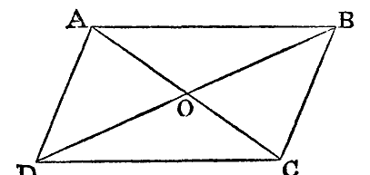
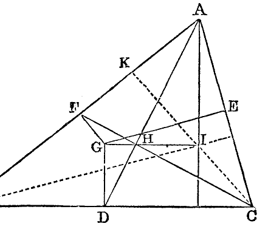
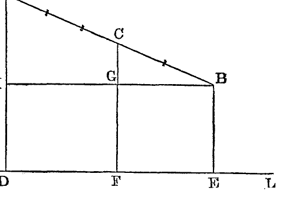

Book I, Section I: Additional Propositions¶
A Sequel to the First Six Books of the Elements of Euclid (5th ed., 1888, pp. 1–16)
f. 0027 · p. 1In the following pages the Propositions of the text of Euclid will be referred to by Roman numerals enclosed in brackets, and those of the work itself by the Arabic. The number of the book will be given only when different from that under which the reference occurs.
For the purpose of saving space, the following symbols will be employed:—
Circle will be denoted by $\odot$
Triangle will be denoted by $\triangle$
Parallelogram will be denoted by $\Box$
Parallel will be denoted by $\parallel$
Angle will be denoted by $\angle$
Perpendicular will be denoted by $\perp$
In addition to the foregoing, we shall employ the usual symbols of Algebra, and other contractions whose meanings will be so obvious as not to require explanation.
f. 0028 · p. 2
Prop. 1.—The diagonals of a parallelogram bisect each other.
Let $ABCD$ be the $\Box$, its diagonals $AC, BD$ bisect each other.
Dem.—Because $AC$ meets the $\parallel$s $AB, CD$, the $\angle BAO = DCO$. In like manner, the $\angle ABO = CDO$ (xxix.), and the side $AB = \text{side } CD$ (xxxiv.); $\therefore AO = OC$; $BO = OD$ (xxvi.).


Cor. 1.—If the diagonals of a quadrilateral bisect each other it is a $\Box$.
Cor. 2.—If the diagonals of a quadrilateral divide it into four equal triangles, it is a $\Box$.
Prop. 2.—The line $DE$ drawn through the middle point $D$ of the side $AB$ of a triangle, parallel to a second side $BC$, bisects the third side $AC$.
Dem.—Through $C$ draw $CF \parallel$ to $AB$, meeting $DE$ produced in $F$. Since $BCFD$ is a $\Box$, $CF = BD$ (xxxiv.); but $BD = AD$ (hyp.); $\therefore CF = AD$. Again, the $\angle FCE = DAE$, and $\angle EFC = ADE$ (xxix.); $\therefore AE = EC$ (xxvi.). Hence $AC$ is bisected.
Cor.—$DE = \frac{1}{2} BC$. For $DE = EF = \frac{1}{2} DF$.
Prop. 3.—The line $DE$ which joins the middle points $D$ and $E$ of the sides $AB, AC$ of a triangle is parallel to the base $BC$.
Dem.—Join $BE, CD$, then $\triangle BDE = ADE$ (xxxviii.), and $CDE = ADE$; therefore the $\triangle BDE = CDE$, and the line $DE$ is $\parallel$ to $BC$ (xxxix.).
Cor. 1.—If $D, E, F$ be the middle points of the sides $AB, AC, BC$ of a $\triangle$, the four $\triangle$s into which the lines $DE, EF, FD$ divide the $\triangle ABC$ are all equal. This follows from (xxxviii.).
f. 0033 · p. 7
Prop. 9.—To divide a given line $AB$ into two parts, the difference of whose squares shall be equal to the square of a given line $CD$.
Let $CD$ be less than $AB$. At $B$ erect $BE \perp$ to $AB$, and equal to $CD$. At the middle point $O$ of $AB$ erect $OP \perp$ to $AB$. With $E$ as centre, and radius equal to $OB$, describe a circle cutting $OP$ in $P$. Draw $PQ \perp$ to $BE$. Then $BQ = OP$. Join $PE$. Then $PE^2 = EQ^2 + PQ^2$. But $PE = OB = OA$; $\therefore OA^2 = (EB - BQ)^2 + PQ^2 = EB^2 - 2 EB \cdot BQ + BQ^2 + PQ^2$. But $BQ^2 + PQ^2 = BP^2$; $\therefore OA^2 = EB^2 - 2 EB \cdot BQ + BP^2$.
Hence $OA^2 - BP^2 = EB^2 - 2 EB \cdot BQ$. Now if $OP$ be produced to meet the circle in $P'$, and $P'Q' \perp BE$, we get $OA^2 - BP'^2 = EB^2 + 2 EB \cdot BQ'$. Taking the sum, $2 OA^2 - (BP^2 + BP'^2) = 2 EB^2 + 2 EB(BQ' - BQ)$. By making the construction on the line $AB$, the segment $AF$ is obtained such that $AF^2 - FB^2 = CD^2$.
Prop. 10.—Given the base of a triangle in magnitude and position, and given also the difference of the squares of its sides, to find the locus of its vertex.
Let $AB$ be the base, $C$ the vertex; let fall the perpendicular $CD$. Then $AC^2 - BC^2 = AD^2 - BD^2$ (xlvii.). But $AC^2 - BC^2$ is given; $\therefore AD^2 - BD^2$ is given. Hence $D$ is a given point (Prop. 9); and since the angle $ADC$ is a right angle, the locus of $C$ is a straight line perpendicular to the base $AB$.
f. 0034 · p. 8Dem.—Through the vertices $A, B, C$ of $\triangle ABC$ draw straight lines parallel respectively to the opposite sides $BC, CA, AB$ (Euclid I.31), forming the circumscribed triangle $\triangle A'B'C'$. Because $ABCB'$ and $ABA'C$ are parallelograms (Euclid I.34), $A$ is the midpoint of $B'C'$, $B$ of $C'A'$, and $C$ of $A'B'$. Moreover, the perpendiculars drawn from $A, B, C$ to the opposite sides of $\triangle ABC$ are perpendicular to $B'C', C'A', A'B'$ at their middle points $A, B, C$. Hence the perpendiculars of $\triangle ABC$ are the perpendicular bisectors of the sides of $\triangle A'B'C'$, and therefore they concur at a single point $H$, called the Orthocentre.
Cor. 2.—The square of the distance of the vertex of a triangle from the orthocentre is equal to four times the square of the perpendicular from the circumcentre on the opposite side; or, the distance from a vertex to the orthocentre is twice the perpendicular from the circumcentre on the opposite side ($AH = 2\,O M_a$).
Prop. 11.—The three medians of a triangle are concurrent.
Let $AD, BE$ be two medians of $\triangle ABC$ intersecting in $G$. Join $D, E$; then $DE \parallel AB$, and $DE = \frac{1}{2} AB$ (Props. 2, 3). The triangles $ABG$ and $DEG$ are equiangular; hence $AG = 2\,GD$, and $BG = 2\,GE$. In like manner, the median $CF$ must cut $AD$ at the same point $G$ which trisects $AD$. Therefore the three medians concur at a single point $G$, called the Centroid (or Centre of Gravity).
Cor. 1.—The point of concurrence $G$ trisects each median, the longer segment being adjacent to the vertex: $AG = 2\,GD, BG = 2\,GE, CG = 2\,GF$.
f. 0035 · p. 9
Prop. 12.—The three perpendiculars to the sides of a triangle at their middle points are concurrent.
Dem.—Let the middle points be $D, E, F$. Draw $FG, EG \perp$ to $AB, AC$, and let these $\perp\text{s}$ meet in $G$; join $GD$: the prop. will be proved by showing that $GD$ is $\perp$ to $BC$. Join $AG, BG, CG$. Now, in the $\triangle\text{s } AFG$ and $BFG$, since $AF = FB$, and $FG$ common, and the $\angle AFG = BFG$, $AG$ is $= GB$ (iv.). In like manner $AG = GC$; hence $BG = GC$. And since the $\triangle\text{s } BDG, CDG$ have the side $BD = DC$ and $DG$ common, and the base $BG = GC$, the $\angle BDG = CDG$ (viii.); $\therefore GD$ is $\perp$ to $BC$.
Cor. 1.—If the bisectors of the sides of the $\triangle$ meet in $H$, and $GH$ be joined and produced to meet any of the three $\perp\text{s}$ from the $\angle\text{s}$ on the opposite sides; for instance, the $\perp$ from $A$ to $BC$, in the point $I$, suppose; then $GH = \frac{1}{2} HI$. For $DH = \frac{1}{2} HA$ (Cor., Prop. 4).


Cor. 2.—Hence the $\perp\text{s}$ of the $\triangle$ pass through the point $I$. This is another proof that the $\perp\text{s}$ of a $\triangle$ are concurrent.
f. 0038 · p. 12
Centres of Mean Position¶
Prop. 16.—If $A, B$ be two points whose coordinates with respect to any axis are $x_1, x_2$, and $C$ a point dividing the segment $AB$ in the ratio $m : n$, the coordinate $\bar{x}$ of $C$ is given by
$$ \bar{x} = \frac{n\,x_1 + m\,x_2}{m + n}. $$


Prop. 17.—If $A, B, C, \dots$ be any system of points, and $a, b, c, \dots$ a system of multiples, there is a unique point $O$, called the Centre of Mean Position (or Mean Centre), such that for any point $P$ in their plane,
$$ a\,PA + b\,PB + c\,PC + \dots = (a + b + c + \dots) PO. $$
Dem.—Find the mean centre $G_1$ of $A$ and $B$ with multiples $a$ and $b$; then the mean centre $G_2$ of $G_1$ and $C$ with multiples $(a+b)$ and $c$, and proceed until all points are included. The resulting point $O$ is unique and independent of the order of composition.
f. 0041 · p. 15
Maxima and Minima¶
Prop. 20.—Of all triangles having the same base and the same perimeter, the isosceles triangle has the maximum area.
Prop. 21.—Of all polygons having the same number of sides and the same perimeter, the regular polygon has the greatest area; and of all polygons formed of given sides, that which can be inscribed in a circle has the maximum area.